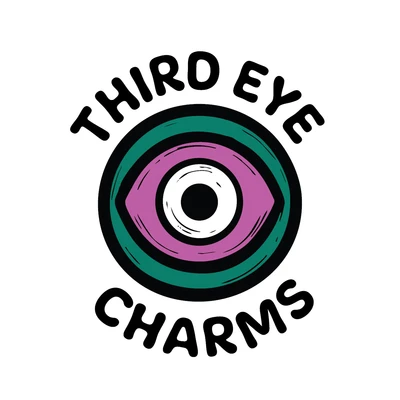
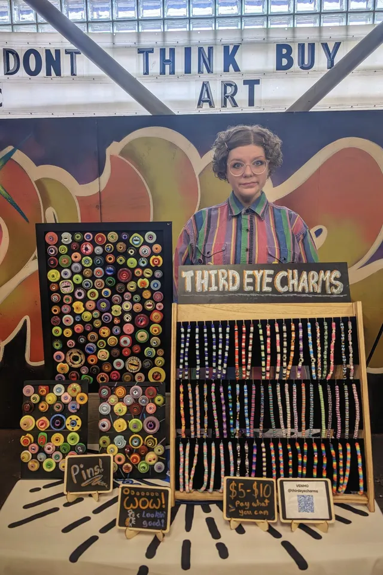
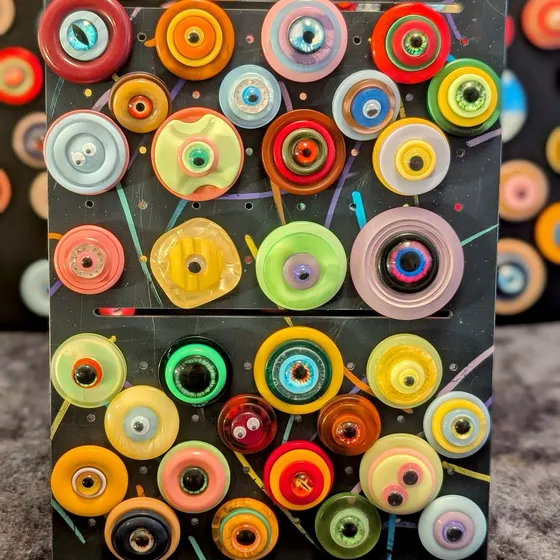
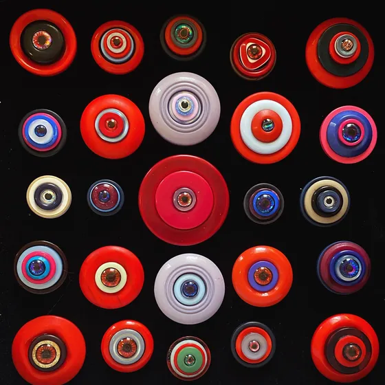
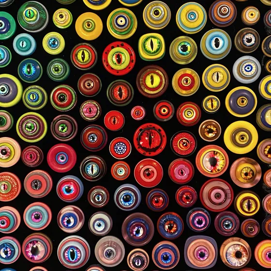
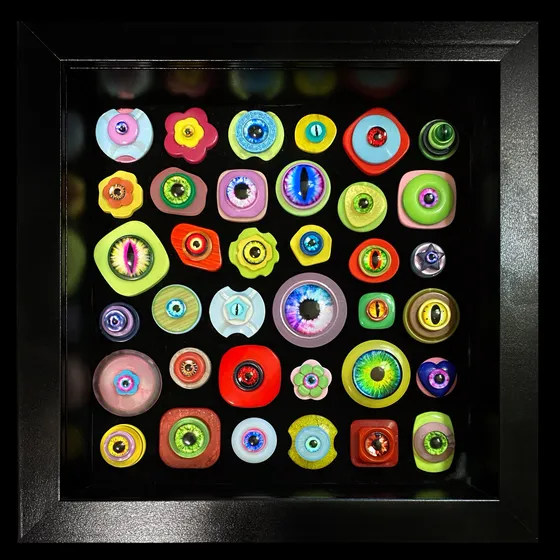

PIA
PIA
Artifacts

Charms handmade in Baltimore. Each is blessed with magik. Pins, magnets, bolo ties, and framed fine art pieces.


Bolo ties

Button eye board

Red shadow box

Blue shadow box

Rainbow shadow box

Mixed shadow box